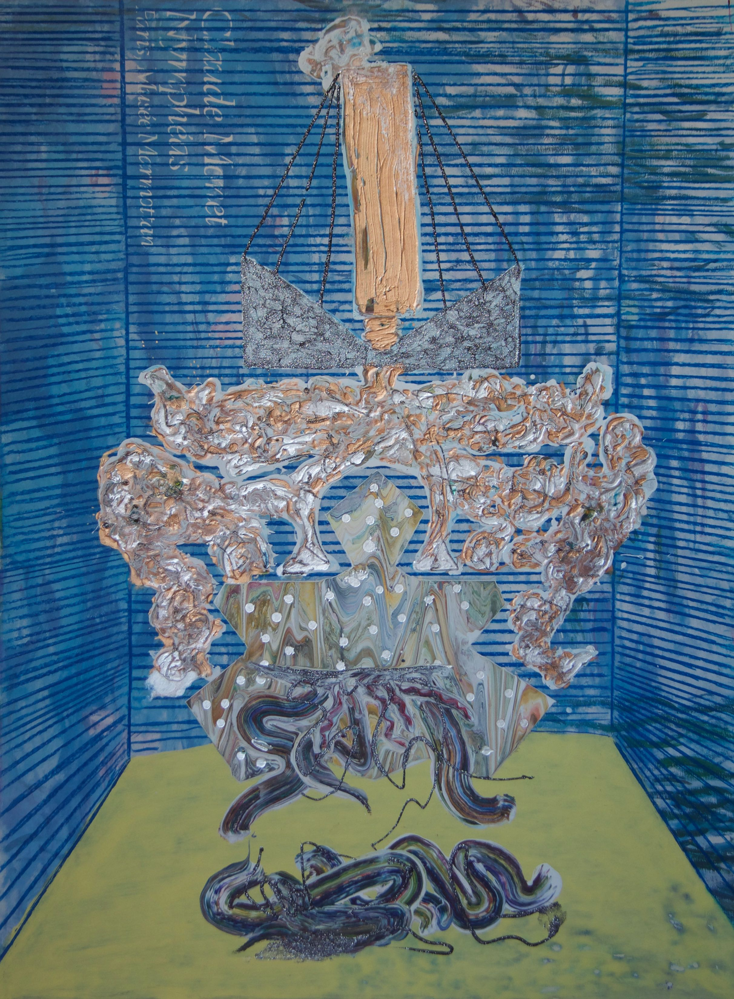
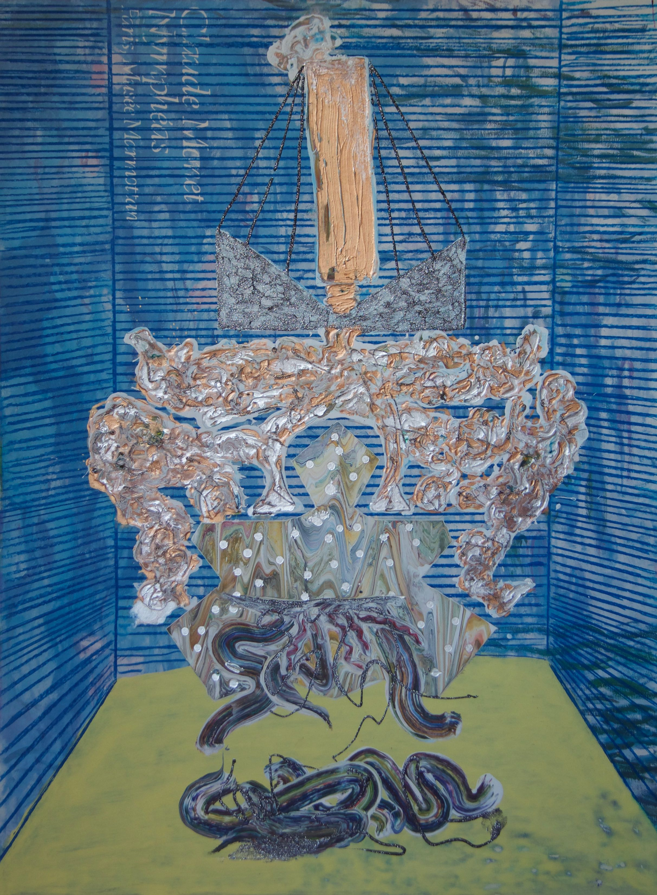

The material
At the beginning of spring 2013, I discovered a captivating material. Since then, it has imprisoned me in an infinite fascination, and countless times given rise to euphoria and ecstasy. The material allows no precise handling, and requires surrender to its own expression and interchangeability. by its nature it reveals control as something alleged, while its incalculability inevitably makes the process a situation, where decisions must be made instantly and continuously.
I found the material in the form of a surplus product from the paint industry. It consists of Acomix Colorpaste from Akzo Nobel tinting machine system, and for those who work with it, it is trash. Acomix Colorpaste is described by the manufacturer as a universal pigment concentrate in paste form, consisting of pigment, stabilizers and water. It is used for tinting both alkyd and waterbased paints as well as emulsion paints. The tinting system works with sixteen single pastes, Phthalo Blue, Blue-Mineral, Phthalo Green, Orange, Red Oxide, Red-Organic, Red-Scarlet, Translucent Red, Translucent Yellow, Violet, Magenta, White, Yellow-Oxide, Yellow- Hansa, Yellow-Lemmon and Black. The tinting machine is calibrated once a day. During calibration, it shoots a small lump of each paste into a bucket, which is manually placed underneath the machine. The pastes does not mix, but flows as separate substances into each other. They are released in a repeating order, and that creates a varying pattern, but the manual handling of the bucket breaks any regularity, and when it is full, the pastes lie arbitrarily and in layers – thus, Acomix Colorpaste becomes a new and composite material, modeled and hardened by its surroundings.
The concentrated pigment must be mixed with a binder to dry and stay resistant. Through experiments with the two units, I have gained a knowledge of the behavior and outcome of the material by different influences. After five years, it still appears to have undiscovered possibilities. I encourage anyone who wants to use and experiment with Acomix Colorpaste, in its original or compound form, to begin without hesitation. Read safety data sheet
Facts & Possibilities - The Material Sequence 1
Facts & Possibilities is a sequence consisting of fifteen paintings that deals with insurrection. The paintings are united through their relationship to each other in the presented order, and by technically established and formable paths between them. In the online exhibition, the screen is platform for the display of physical works. It adds a digital value to the traditional paintings, that clarifies their appearance in the physical world.


 
